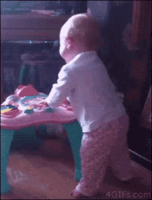

I just really wanted to make this about falling babies because I just finished playtesting a game for my dear friend Manny that he created, it's a tabletop game called Grave of God and I am playing with some more friends and my character is named Mary, she's an angel, and she is traveling with Sal, a demon who is her ex boyfriend and they act SOOOOOOO divorced together but also trust the crap out of each other. They also have a daughter named Dante who they adopted bc she's a half-demon soldier who was built to be a soldier basically and they're trying to parent her into a normal child. And she learned how to astral project but as a consequence her body would pass out and she literally went "hey Sal watch this" and astral projected and her body fell onto the floor so it looked like she went "hey watch this" and then passed out. And i used both of these gifs to describe what Dante did because I was literally crying laughing.